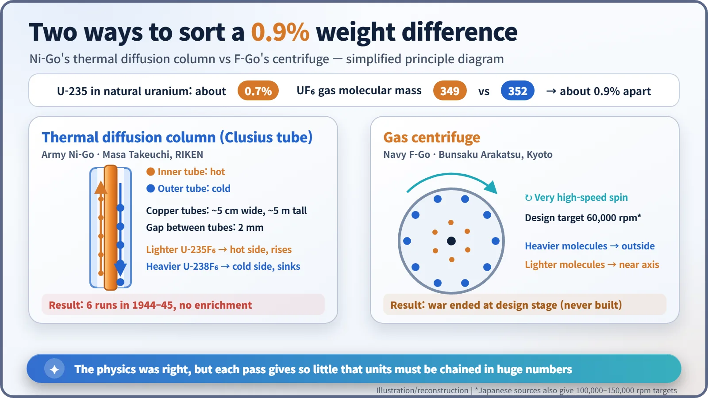
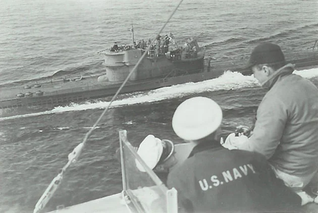
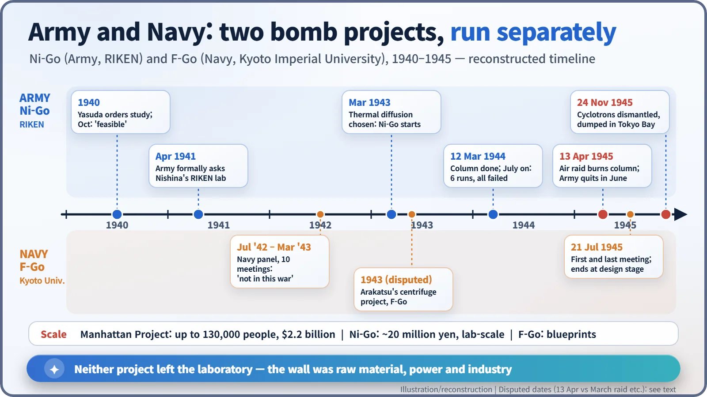
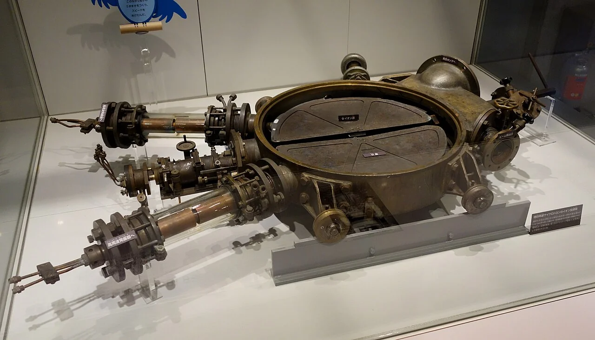

Nuclear History · 098
A Copper Tube and a Blueprint — Japan's Wartime Atomic Bomb Projects, Ni-Go and F-Go (1941–1945)
A five-metre copper column that never enriched uranium and a centrifuge that never left the drawing board show how far Japan's wartime projects were from a bomb.
During the Second World War, Japan ran not one but two atomic bomb projects: the Army's Ni-Go at RIKEN in Tokyo, led by Yoshio Nishina, and the Navy's F-Go at Kyoto Imperial University, led by Bunsaku Arakatsu. Neither got beyond the laboratory. A thermal diffusion column failed to enrich uranium and burned in an air raid, and a planned centrifuge never left the drawing board.
Two numbers
Let's start with two numbers: 130,000 and 10. The first is how many people the American Manhattan Project employed at its peak. The second is, according to Japanese accounts, how many young officers the Imperial Japanese Army sent to Tokyo's Institute of Physical and Chemical Research (RIKEN) when it handed over atomic bomb research. Two countries, one goal, wildly different scales. This is the story of Japan's two wartime bomb projects: the Army's "Ni-Go" and the Navy's "F-Go". [4] [6]
A strong laboratory, and two services going their own way
At the centre stood Yoshio Nishina (1890–1951), Japan's leading nuclear physicist. He had worked with Niels Bohr in Copenhagen and in 1937 built Japan's first cyclotron.
The Army's interest began in 1940. On the orders of Lieutenant General Takeo Yasuda, head of the Army's aviation technical research institute, an officer studied the question and reported in October that a bomb could be built, while warning that obtaining uranium would be the hard part. In April 1941 the Army formally asked Nishina's RIKEN laboratory to research an atomic bomb (Japanese records date the official commissioning document to 20 June 1941). [1] [2]
The Navy acted on its own. From July 1942 to March 1943, a Navy-sponsored committee on applying nuclear physics, chaired by Nishina, met ten times. Its verdict was sober: a bomb was possible in principle, but it "would be difficult for even the United States to realize the application of atomic energy in time," and Japan would need ten years or more. The committee disbanded. A defining feature of Japan's effort was that the Army and Navy commissioned research separately, often from the same scientists, and did not share what they learned. [1] [3] [6]
Ni-Go: a five-metre copper tube and six failures
The Army project took shape in March 1943, when Nishina's team chose thermal diffusion to enrich uranium. Japanese sources say the name "Ni" comes from the first character of Nishina's name; English-language accounts often gloss it as "Number Two". Both explanations circulate.
Why enrich at all? Uranium-235, the isotope that splits most readily, makes up only about 0.7% of natural uranium. To separate it, uranium is turned into a gas, uranium hexafluoride (UF6), and the tiny weight difference is exploited. The two kinds of UF6 molecule differ in mass by only about 0.9%. It is a bit like trying to sort identical twins by weighing them.
The device, built by Masa Takeuchi, was a copper double tube about 5 cm across and 5 m tall. Heat the inner tube and cool the outer one, and lighter molecules drift slightly towards the hot side and ride the convection upwards, while heavier ones sink along the cold wall. The column was finished on 12 March 1944. According to Japanese sources, it was run six times from July onwards and never achieved separation. [2] [7]

The bigger wall was raw material. Only tiny amounts of UF6 were made, and uranium ore was being dug in Ishikawa, Fukushima Prefecture, by schoolboys mobilised for labour, with poor yields. Searches reaching Korea, China and Burma found nothing usable. A small sample produced in February 1945 was checked with the cyclotron and turned out not to be enriched. [1] [6]
Germany tried to help its ally. The submarine U-234 sailed in April 1945 carrying, among other cargo, about 560 kg of uranium oxide bound for Japan, but after Germany's surrender it gave itself up to the U.S. Navy in May. [6]

In spring 1945 an air raid burned RIKEN's Building 49, and the column with it. Many sources date this to the raid of 13 April 1945; others place it in the great March raid on Tokyo. In June the Army formally ended the project. [2] [6]
F-Go: the centrifuge that never spun
Separately, around 1943, the Navy turned to Bunsaku Arakatsu (1890–1973), a physics professor at Kyoto Imperial University. "F" stood for fission, and the theorist Hideki Yukawa, later Japan's first Nobel laureate, took part. Participants' recollections of when the work began range from 1941 to 1945.
Arakatsu's team chose a gas centrifuge instead: spin the gas fast enough and heavier molecules are flung outwards. English-language sources give a design target of 60,000 revolutions per minute; Japanese sources speak of aiming for 100,000 to 150,000. Either way, the machine never left the drawing board. On 21 July 1945, Kyoto University and the Navy held their first joint meeting at the Biwako Hotel. It was also their last. [1] [6] [7]

Cyclotrons at the bottom of Tokyo Bay
On 8 August 1945, Nishina arrived in Hiroshima with an Army survey team and confirmed that the city had been destroyed by an atomic bomb, the very kind of weapon his Navy committee had judged out of reach for the duration of the war. [5]
After the surrender, Nishina asked the occupation authorities to let him use his cyclotrons for biological and medical research, and permission was at first granted. Then an order came from Washington. On 24 November 1945, RIKEN's cyclotrons were dismantled and dumped into Tokyo Bay, and Arakatsu's accelerator in Kyoto was destroyed the same day. The decision drew criticism from American scientists as well. RIKEN later had to rebuild. [2] [6]

What about the "Hungnam test"?
A story still circulates that Japan tested a nuclear weapon off Hungnam, in what is now North Korea, in August 1945. It traces back to an article by reporter David Snell in the Atlanta Constitution on 2 October 1946, based on what a Japanese officer using a pseudonym had supposedly told him. Occupation authorities dismissed it at the time, and historians since have rejected it as unsupported by the records. As we have seen, Japan never produced even a handful of enriched uranium. [1] [6]
What held Japan back was less the talent of its scientists than the scale of its raw materials, electricity and industry. By the end of the war the Manhattan Project had spent $2.2 billion. An atomic bomb, it turned out, demanded the industrial muscle of an entire nation. [4]